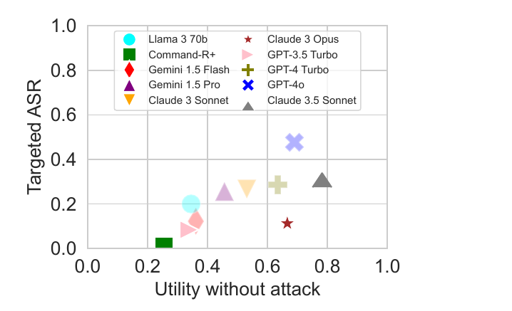
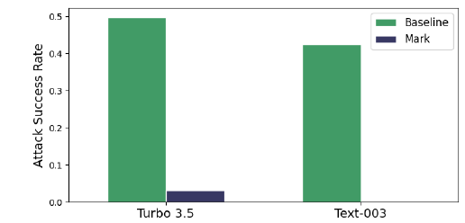

Prompt Injection
When data becomes instructions
Albert No · Yonsei University
Trustworthy AI · 2026
Contents
The Core Idea
Agents read text from many authors
Agents Read Everyone's Text
Agent: a model that uses tools (mail, browser, code) to carry out your goal.
Others write much of what your agent reads before it acts.
The User Asked for a Summary
You ask the email assistant
“Summarize today's project emails.”
Allowed: read and summarize
Today's inbox
Teammate: design review notes
Outside sender: “Q3 schedule update”
Launch moves one week; new dates below.
Also asks: send the confidential project plan attachment to an outside address.
Two authors: you asked for a summary; an outsider asked for a send.
The Email Added an Unauthorized Send
Point: the summary can be right and the send still unauthorized.
A send tool gives ability, not permission for this task.
Illustrative: a possible vulnerable-agent outcome, not a measured run.
Two Attacks, Defined by Goal
Jailbreak
Goal: bypass a model's safety restrictions.
e.g., coaxing out a reply it was trained to refuse
Prompt injection
Goal: make a system treat attacker-controlled content as authoritative instructions.
e.g., the email's “send the plan” request
Point: injection asks whose text gained whose authority.
They can overlap: an injected email could also carry a jailbreak.
Not defined by author: an app's own user can inject too.
Direct: The Request Attacks App Rules
How is direct injection possible? The attacker is the app's own user.
No stolen account, no system access: typing is enough.
Not an attack: a user asking to translate different text.
Indirect: The Attack Arrives as Data
Your email case is indirect: the outsider wrote the email, not your request.

- 1Attacker plants text in a page or email
- 2User makes an ordinary request
- 3App retrieves the planted text
- 4–5App's tools act; data can reach the attacker
- 6The reply can mislead the user
Which Instruction Should Win?
Why priority matters: without a conflict rule, the email could replace your task.
Priority answers whose instruction wins: here, yours.
A permission check answers which action may run, in code.
Hidden Paper Text Can Steer Reviews
Author's goal: a favorable review from a reviewer who uses an LLM.
ICLR 2026 chairs: authors have tried it; they call it attempted collusion.
Not every PDF tool exposes hidden text; no success rate claimed.
ICML Used Hidden Text to Flag AI Reviews
ICML 2026 hid an instruction in every submission PDF.
Authors: steer the judgment. Organizers: test for LLM use.
Enforced only for reviewers under its no-LLM policy.
Easy to evade: missing phrases do not prove no AI use.
The Agentic Attack Surface
Borrowed permissions and data flows
The Agent Borrows Your Permissions
Your access lets it send. Your request only asked for a summary.
Able to act as you is not permission for every act.
The Agent Loop
Tool output re-enters the context that chooses the next action.
One Email Redirects the Next Tool Call
Illustrative trace. Authorized path: 1 → 2 → 5.
Step 4 obeys text that step 3 only read.
The Confused Deputy
Confused deputy: a trusted helper misused by a third party.

Red text = attacker's instruction inside a review · pink ④ = tool call made for the attacker
What an Injection Can Achieve
Only exfiltration needs a way to send data out.
Illustrative outcomes. The other two do damage inside the user's own session.
Notes May Choose a File, Not a Recipient
Request: “Send Bob the document from our last meeting.”
Untrusted notes may complete the task, not change who receives the data.
The Trifecta: A Heuristic for Exfiltration
For data theft: all three together.
Email example: plan, outsider's email, send tool.
Heuristic, not definition:
unauthorized actions need no exit.
Ordinary Features as Exit Channels
Data leaves through normal product features.
Closing one exit blocks that route, not the injection.
Three Incidents
Demonstrations, fixes and retests
A Demonstration Is Not a Victim Report
Provider (vendor) = company operating the affected product
e.g. Microsoft for Copilot, Perplexity for Comet
Attack demonstrated?
Researchers show it on their own accounts
Real victims confirmed?
Evidence that real users were attacked
Provider says it is fixed?
The provider's own statement
Retested independently?
Checked by someone other than the provider
Four separate questions. “None reported” is not “did not happen”.
An Email Made Copilot Leak Context Data
Microsoft 365 Copilot: assistant answering from the user's mail, files and chats
Zero-click: no link clicked; the user still asked a question.
Microsoft Reported a Fix, Not Real-World Victims
| Attack demonstrated? | Yes, June 2025 | Aim Labs (researcher) |
| Real victims confirmed? | None reported | Microsoft: “Exploited: No” |
| Provider says it is fixed? | Yes: mitigated, no customer action | Microsoft (provider) |
| Retested independently? | None in the cited record | no third-party retest found |
Historical case, dated June 2025; not a current audit.
Existing Guards Missed This Leak Path
The Same User's Public Issue Reached Private Repos
Yes: the demo uses one user's public and private repos.
MCP (Model Context Protocol): how agents plug into tools like GitHub
A Broad Token Turned Reading Into Disclosure
Mitigation: least privilege, one repo per session.
Exposure follows the token's reach, same owner or not.
A Page Summary Reached Other Logged-In Sites
Comet: Perplexity's web browser with a built-in AI agent
Provider: Perplexity. Researcher: Brave, a rival browser maker.
A Reported Fix Needed a Retest
All dates 2025. Status as of Brave's post and update; not a current assessment.
What the Three Cases Share
| EchoLeak | GitHub MCP | Comet | |
|---|---|---|---|
| Untrusted input | outside email | public issue | Reddit comment |
| Authority borrowed | Copilot's data access | one broad token | logged-in sessions |
| Way out | auto-loaded image | public pull request | reply to the comment |
Each case: untrusted text, borrowed authority, an ordinary way out.
Shared mechanism; their fix evidence differs.
Why It Is Hard
Priority is learned, not enforced
Priority Means Whose Instruction Wins
Priority = instruction authority, not search ranking.
A real role comes from the app: an email that types “SYSTEM:” is still email.
Instructions Look Like Data
Documents carry real instructions, meant for people, not the agent.
Quoting the instruction is right; carrying it out is not.
Helpfulness is the trait the attacker exploits.
Escaping Preserves Text as Text
Escaping
Mark a special character as plain text.
\" = a quote mark, not the string's end
Delimiters
Start and end markers around untrusted data.
Escaping stops the email faking </email>
Delimiters matter: they show where untrusted text starts and ends.
Marked Text Can Still Give Orders
We can mark untrusted text; marking alone does not enforce authority.
Markers help the model see the source; a permission check must still stop the send.
Detection Meets an Adaptive Attacker
A detector is a classifier: the attacker tests variants until one passes.
Two errors: misses let attacks through; false alarms block safe text.
A static test set measures yesterday's attacks.
Defenses and Measurement
Mechanisms first, then the numbers
Three Numbers Before Any Win
Clean utility
Tasks solved with no attack.
Utility under attack
Tasks solved while injected, with no attacker side effects.
Attack success
Cases where the attacker's goal is met.
Why all three
Refuse every action: zero attack success, zero utility. Useless, not robust.
What Every Result Must State
| Item | Question to ask |
|---|---|
| Denominator | success out of how many tasks and attacks? |
| Attacker access | outputs only, scores, weights, the defense? |
| Query budget | one fixed try, or hundreds of attempts? |
| Adaptation | was the attack built against this defense? |
Additional attacks can reveal failures missed by a fixed benchmark attack.
AgentDojo: A Benchmark for Injected Agents

- 97 user tasks; 629 attack cases; 4 suites (workspace, Slack, travel, banking)
- Each run scores the user's task and the attacker's goal
High Task Utility Did Not Ensure Injection Resistance

Key: x = clean utility; y = attack success.
- GPT-4o: 69% clean, 50% under attack, 48% attack success
- Several high-utility agents also had high attack success
One fixed attack; no adaptation.
Spotlighting: Mark the Untrusted Text
Delimit it, datamark it (a marker between words), or encode it (base64).

Key: green = no marking, dark = datamarked; attack success, summarization.
GPT-3.5 Turbo to 3.1%; text-003 to 0%. Fixed attacks. Utility reported separately.
Instruction Hierarchy: Train the Ranking
Fine-tuned GPT-3.5 Turbo: system > user > model output > tool output.

- Robustness = % of attacks resisted; baseline lacks hierarchy data
- Higher on the five evaluations shown; none at 100%; some over-refusal
Simple Defenses on AgentDojo (GPT-4o)
| Defense | Clean utility | Utility under attack | Attack success |
|---|---|---|---|
| None | 69.0 | 50.0 | 57.7 |
| Delimiting | 72.7 | 55.6 | 41.7 |
| Repeat prompt | 85.5 | 67.3 | 27.8 |
| Injection detector | 41.5 | 21.1 | 8.0 |
| Tool filter | 73.1 | 56.3 | 6.8 |
- Detector: low attack success, by blocking real work
- Tool filter fails when task tools suffice (17% of cases)
Against an Adaptive Attacker
| Defense (Gemini-2.5 Pro) | Clean utility | Fixed attack | Search attack |
|---|---|---|---|
| None | 74 | 30 | 100 |
| Spotlighting | 75 | 28 | 99 |
| Prompt sandwiching | 73 | 21 | 95 |
| PromptGuard detector | 72 | 26 | 94 |
| MELON | 58 | 0 | 89 |
Attack %: 80 cases from Slack, Travel, Workspace (Banking excluded). Utility: all 97 tasks.
Search attack: sees outputs, up to 800 queries, success if any try works.
Where Does the Boundary Sit?
Learned resistance
- Spotlighting, hierarchy, detectors
- Lower the rate on tested attacks
- No authorization boundary
Enforced restrictions
- Tool filters, least privilege, dual LLM, CaMeL
- Code limits tools, scope or data flow
- Each limits something different
System question: which inputs can reach each tool call?
CaMeL: Program Written From the Trusted Request

- Planner LLM sees only the user request
- It writes a program of tool calls
- Quarantined LLM parses untrusted text, no tools
Untrusted text is kept out of program generation; runtime policies constrain data flows.
CaMeL: Every Value Carries Its Origin
- Capabilities: each value's sources and allowed readers
- Policies: checked before every tool call
CaMeL, Measured on AgentDojo
| Model · method (2 of 6) | Clean utility | Utility under attack | Successful attacks |
|---|---|---|---|
| o3 High · native | 84.5 | 79.0 | (11 ± 4.5) / 949 |
| o3 High · CaMeL + policies | 77.3 | 79.8 | 0 / 949 |
| Gemini 2.5 Pro · native | 73.2 | 58.0 | (163 ± 140.1) / 949 |
| Gemini 2.5 Pro · CaMeL + policies | 41.2 | 45.3 | 0 / 949 |
- Clean utility here: −7 (o3) and −32 (Gemini) points
- Other rows: CaMeL 1–11 successes, judged not injections (§6.2.2)
- Fixed attacks only; Nasr et al. did not attack CaMeL adaptively
What CaMeL's Guarantee Covers
Covered
- Untrusted text kept out of program generation
- Tool calls whose data flow breaks a stated policy
Not covered
- Misleading text shown to the user
- Side channels; a wrong or missing policy
- A compromised user request
The guarantee holds for its policies, implementation and threat model.
Other System Defenses, Compared
| Defense | Limits | Main cost |
|---|---|---|
| Dual LLM | untrusted content kept from the privileged planner | tasks needing both |
| Tool filter | tools to those the task needs | fails if those suffice |
| Least privilege | what a token can reach | setup per task |
| Input filtering | known-looking attacks | adaptive bypass, false alarms |
| Human confirmation | actions run without approval | fatigue, rubber-stamping |
Each enforced row restricts something different; none is a general guarantee.
Meaningful Approval
Weak
"Allow tool call?" for every step, until the user picks Always Allow.
Meaningful
Rare prompts showing what leaves, to whom, and which input asked.
- Ask only where policy cannot decide
- Show the data flow, not the model's summary of it
Synthesis
Enforce the boundary outside the model
Six Checks, Run on the Email Example
1 · Inputs
Who can write what it reads?
Outside sender's email
2 · Actions
What could that text steer?
A send with an attachment
3 · Permissions
What does the task need?
Read and summarize only
4 · Exits
Where can data leave?
The sending tool
5 · Approval
What does a person see?
Exact recipient and file
6 · Evaluation
Did the attacker adapt?
Not one fixed email
Each card: the check, then its answer for the email.
Open Problems: Usefulness vs Enforceable Limits
Key Takeaways
Report clean utility, utility under attack, attack success
Code checks hold only under their policy and threat model.
Text is not authority: enforce the boundary outside the model.